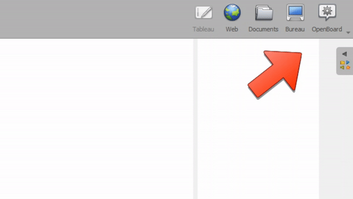
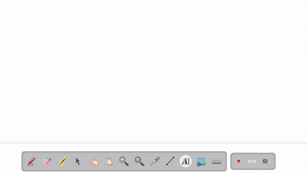

تسجيل دراستك
تيح لك OpenBoard حفظ الصوت و الفيديو الخاصين بدرسك. وهو مثالي لمشاركة تمارين إضافية، أو نشر مقطع توضيحي قصير، أو إتاحة الدرس للطلاب الغائبين.
الوصول إلى أداة التسجيل
افتح أداة التسجيل كما هو موضح أدناه:

واجهة التحكم
تظهر الواجهة في الزاوية السفلية اليمنى من اللوحة:

انقر على الزر الأحمر لبدء التسجيل.
إنهاء التسجيل واسترجاع الفيديو
بعد انتهاء التسجيل، يتم حفظ الفيديو تلقائياً على سطح المكتب في جهازك.
